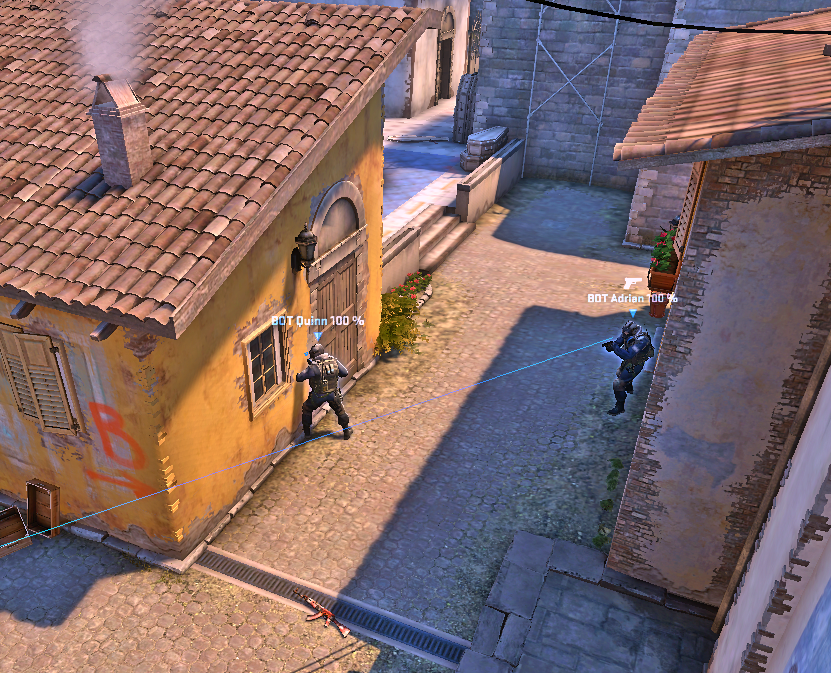
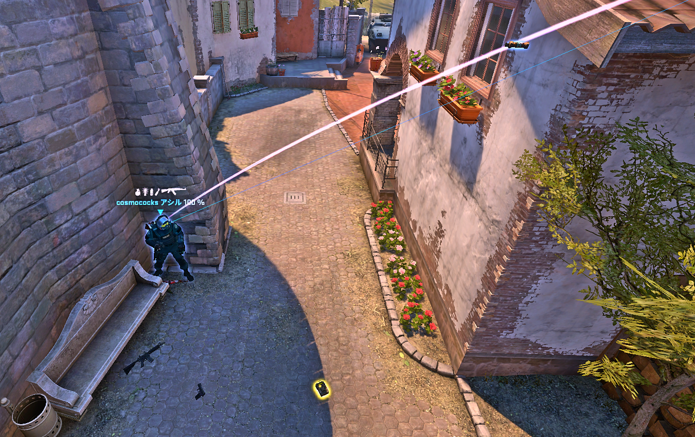
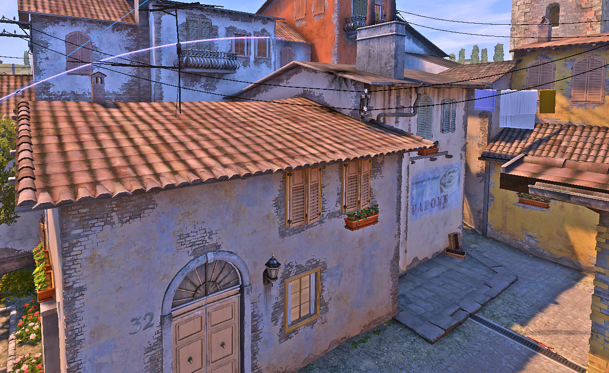
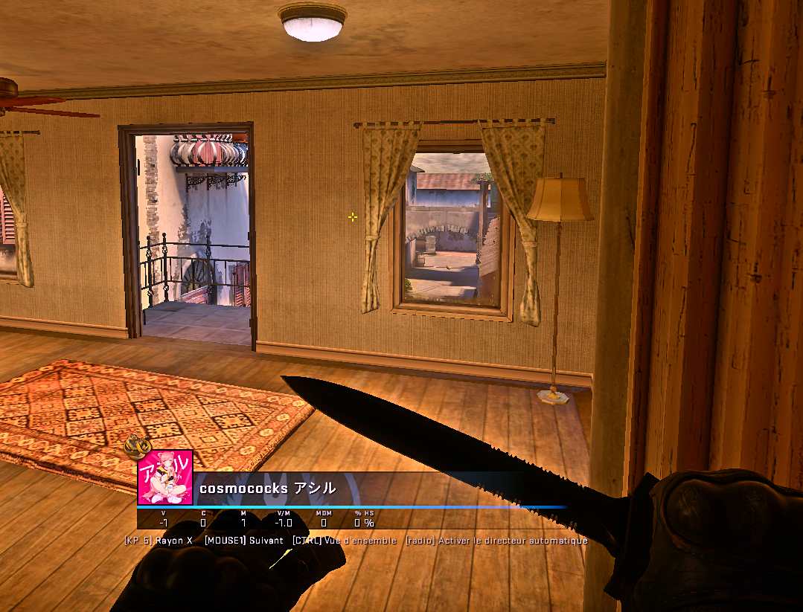
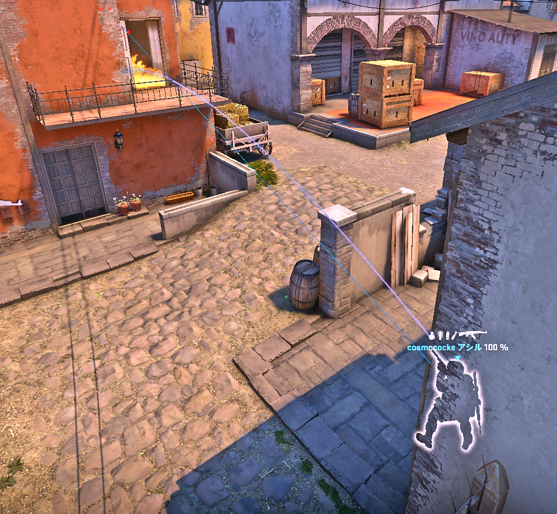

INFERNO STRAT BOOK CT
Sur cette page on retrouve l'ensemble de nos stratégies CT sur inferno explicitée de manière détaillées
Pistol
Le Pistol CT se base sur un Antirush B à 3 et une prise d'infos en A. Un joueur du B possède Kit + Flash x2 et un joueur du A possède une molotov et une flash. On commences en B par un setup de reprise Fallen avec deux joueurs Fallen prêts à reprendre, la première info importante du round est l'info son du Rush B, en cas de steps Banane, on ammorce tout de suite les flashs voiture et le double peek fallen afin de stopper le rush.
  Pendant ce temps en A, un joueur cherche l'information Second Mid en sautant par le boiler, en cas de non B-rush, si sur cette information, aucun joueur adverse n'est vu, il devient intéressant d'ammorcer la reprise B même si rien n'a été entendu Banane car le risque de Déclic B est important. En cas de contact sur l'équipe entière, on ammorce de suite la rotation du joueur CT en B vers le A, et le joueur boiler peut retourner fond Apps immédiatement. Le dernier joueur se tenant Pit a pour but d'antirush l'appartement à l'aide de sa molotov en cas d'accélération sur les appartements.
 Enfin, dans le cas ou l'équipe ne joues pas groupé et avec un contact faible second mid, on fera quand même l'aggression B afin de privilégier des duels à L'USP et de chercher des entrys. Si le joueur prenant l'info apps ne voit rien il a le choix soit de push l'appartement, soit de récupérer les informations sur la Longue A, sachant qu'en cas de rush mid, le joueur apps vera de suite le rush mid, ammorcant une aggression B+Rotation instantanée.